library(data.table); library(ggplot2); library(knitr); library(lme4); library(QuantPsyc)
opts_chunk$set(warning=TRUE, cache=TRUE,tidy=FALSE,autodep=TRUE,dev=c('png','pdf'),fig.width=20,fig.height=12.5,out.width='1440px',out.height='900px',cache.extra=file.info('ddb.rdata')[, 'mtime']);
opts_knit$set(self.contained = F)
source("0__helpers.R")
load("ddb.rdata")The ddb.1 dataset contains only those participants where paternal age is known, the birthdate is between 1720 and 1850 and the marriage is known (meaning we know when it started and how it ended by spousal death). In known marriages we can assume that missing death dates for the kids mean that they migrated out.
All of the following models have the following in common:
Bobyqa is fairly robust to convergence failures. In addition to using Bobyqa, we center some variables that otherwise lead to large eigenvalues.
control_defaults = glmerControl(optimizer = "bobyqa")As in our main models, we control for birth.cohort (birth years in five equally large bins), male sex. Additionally, we control for paternal and maternal loss (whether either parent died within 5 years of the birth), for maternal age (bins of 14-20, 20-35 and 35-50), the total number of siblings (constant for all siblings) and the number of siblings who where alive and dependent during the first 5 years of the child (defined as being alive simultaenously, less than 10 years old, and not dying in the first year).
We added random intercepts for each family (father-mother dyad). We then controlled for the average paternal age in the family. Hence, the paternal age effects in the plot are split into those between families and those within families or between siblings. The relevant effect for our hypothesized mechanism, de novo mutations, is paternal age between siblings.
Here, episodes of selection refers to survival, mating success, reproductive success. To steer clear of sacrificial pseudo-replication, we make sure that each effect cannot be explained by the episode of selection preceding it. At its simplest, we check for effect on survival to reproduction only among those who lived to their first birthday. In later models, we look for an effect on number of children only among those who married and control their number of spouses.
In our main analyses, we chose to control for the number of other siblings who were very dependent (i.e. younger than 5) in the first 5 years of life. We think this maps more closely to our intention to control social competition among siblings. Other researchers have decided to control for birth order (or the number of older siblings). In the case of multiple births, it is ill-defined because exact birth order is often not known and does not matter as much (but especially a fraternal co-twin can be seen as just as much a competitor as a regular sibling, which is picked up by our chosen control variable). To show that our results hold up when this perhaps more standard, but arguably flawed variable is controlled instead, we offer the following two analyses.
ddb.1[, birthorder.factor := factor(ifelse(birthorder>4,"5+", birthorder))]
ddb.1[, last_born := birthorder==nr.siblings]
Any_surviving_children <- glmer(
any_surviving_children ~ birthorder.factor + last_born + scale(dependent_sibs_f5y) + maternalage.factor + paternalloss + maternalloss + scale(nr.siblings) + birth.cohort + male +paternalage.mean + paternalage.diff + (1|idParents),
data= ddb.1, subset = byear < 1850,
family = 'binomial', control = control_defaults )
summary(Any_surviving_children)## Generalized linear mixed model fit by maximum likelihood (Laplace
## Approximation) [glmerMod]
## Family: binomial ( logit )
## Formula:
## any_surviving_children ~ birthorder.factor + last_born + scale(dependent_sibs_f5y) +
## maternalage.factor + paternalloss + maternalloss + scale(nr.siblings) +
## birth.cohort + male + paternalage.mean + paternalage.diff +
## (1 | idParents)
## Data: ddb.1
## Control: control_defaults
## Subset: byear < 1850
##
## AIC BIC logLik deviance df.resid
## 83012 83180 -41488 82976 83832
##
## Scaled residuals:
## Min 1Q Median 3Q Max
## -2.168 -0.540 -0.317 -0.116 7.787
##
## Random effects:
## Groups Name Variance Std.Dev.
## idParents (Intercept) 1.03 1.02
## Number of obs: 83850, groups: idParents, 24324
##
## Fixed effects:
## Estimate Std. Error z value Pr(>|z|)
## (Intercept) -0.9979448 0.0404231 -24.7 < 2e-16 ***
## birthorder.factor2 0.1483709 0.0302183 4.9 9.1e-07 ***
## birthorder.factor3 0.1967325 0.0386806 5.1 3.7e-07 ***
## birthorder.factor4 0.2393978 0.0467521 5.1 3.0e-07 ***
## birthorder.factor5+ 0.2232931 0.0568801 3.9 8.6e-05 ***
## last_bornTRUE 0.0202667 0.0258118 0.8 0.4324
## scale(dependent_sibs_f5y) -0.1610122 0.0150043 -10.7 < 2e-16 ***
## maternalage.factor(10,20] -0.1573391 0.0837384 -1.9 0.0603 .
## maternalage.factor(35,59] -0.0544646 0.0292377 -1.9 0.0625 .
## paternalloss -1.0714740 0.0397876 -26.9 < 2e-16 ***
## maternalloss -1.6178892 0.0426205 -38.0 < 2e-16 ***
## scale(nr.siblings) 0.0130239 0.0188826 0.7 0.4904
## birth.cohort(1824,1845] -0.0000461 0.0241603 0.0 0.9985
## birth.cohort(1845,1860] -0.3420433 0.0387881 -8.8 < 2e-16 ***
## male -0.0495408 0.0191484 -2.6 0.0097 **
## paternalage.mean -0.0295123 0.0191318 -1.5 0.1229
## paternalage.diff -0.3163886 0.0447116 -7.1 1.5e-12 ***
## ---
## Signif. codes: 0 '***' 0.001 '**' 0.01 '*' 0.05 '.' 0.1 ' ' 1
##
## Correlation of Fixed Effects:
## (Intr) brth.2 brth.3 brth.4 brt.5+ l_TRUE s(__5) m.(10, m.(35,
## brthrdr.fc2 -0.567
## brthrdr.fc3 -0.648 0.573
## brthrdr.fc4 -0.659 0.548 0.649
## brthrdr.f5+ -0.709 0.549 0.688 0.747
## lst_brnTRUE -0.103 0.008 -0.001 -0.011 -0.025
## scl(dpn__5) 0.291 -0.291 -0.381 -0.353 -0.273 -0.055
## mtr.(10,20] -0.037 0.064 0.045 0.032 0.021 -0.011 0.063
## mtr.(35,59] -0.334 0.066 0.092 0.090 0.062 -0.056 0.068 -0.046
## paternallss -0.099 0.003 0.005 0.004 0.007 0.000 0.022 -0.019 0.071
## maternallss -0.061 -0.011 -0.013 -0.012 -0.014 -0.010 0.034 -0.003 0.044
## scl(nr.sbl) 0.335 -0.134 -0.227 -0.307 -0.478 0.139 -0.348 -0.055 -0.058
## b.(1824,184 -0.316 -0.017 -0.029 -0.038 -0.060 0.004 0.029 0.008 0.034
## b.(1845,186 -0.227 -0.004 -0.011 -0.016 -0.033 0.005 0.014 0.012 0.021
## male -0.244 -0.007 -0.002 -0.001 0.003 0.003 0.002 0.002 0.005
## paternlg.mn 0.089 -0.095 -0.147 -0.167 -0.209 0.039 0.083 0.020 -0.175
## patrnlg.dff 0.739 -0.371 -0.553 -0.630 -0.774 -0.061 0.237 0.088 -0.446
## ptrnll mtrnll scl(.) b.(182 b.(184 male ptrnlg.m
## brthrdr.fc2
## brthrdr.fc3
## brthrdr.fc4
## brthrdr.f5+
## lst_brnTRUE
## scl(dpn__5)
## mtr.(10,20]
## mtr.(35,59]
## paternallss
## maternallss -0.452
## scl(nr.sbl) 0.073 0.061
## b.(1824,184 0.022 0.033 -0.094
## b.(1845,186 0.024 0.033 -0.095 0.427
## male 0.006 0.004 0.000 0.002 0.000
## paternlg.mn 0.011 0.074 0.026 0.122 0.079 0.000
## patrnlg.dff -0.068 -0.017 0.390 -0.045 -0.050 -0.005 0.218Any_surviving_children_coefs = fortify_mine(Any_surviving_children)
plot_fortified_mer(Any_surviving_children_coefs, "Any surviving children")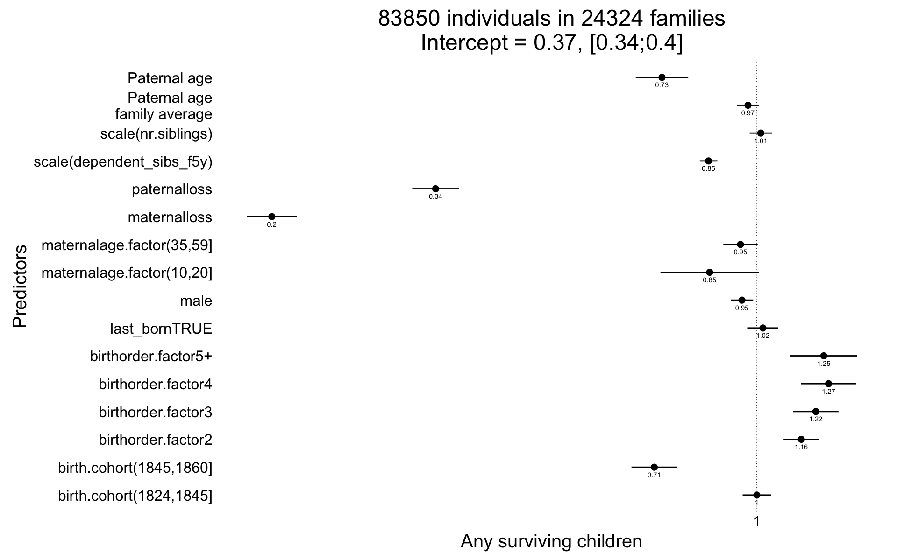
In this analysis, we attempt to form a dummy variable for “being likely to inherit property”. In actual fact, inheritance, then as now, was a complex system. This analysis is overly conservative, because controlling for a variable that contains “reaching adulthood” means adjusting for part of the outcome (no early mortality). Still, paternal age differences have a negative effect above and beyond this.
setkey(ddb.1, idParents, bdate)
ddb.1[, first_born_adult_male := ave(ifelse(male == 1 & surviveR == 1,1,0), idParents, FUN = function(x) {
x[is.na(x)] = 0
y = cumsum(x)
ifelse(y > 0 & y == x,1,0)
})]
ddb.1[, last_born_adult_male := ave(ifelse(male == 1 & surviveR == 1,1,0), idParents, FUN = function(x) {
x[is.na(x)] = 0
y = max(cumsum(x)) - cumsum(x) + 1
ifelse(y > 0 & y == x,1,0)
})]
# rpqa.1 %>% dplyr::select(idParents, byear, age, first_born_adult, last_born_adult) %>% arrange(idParents,byear) %>% head(100)
Any_surviving_children <- glmer(
any_surviving_children ~ first_born_adult_male + last_born_adult_male + birthorder.factor + last_born + scale(dependent_sibs_f5y) + maternalage.factor + paternalloss + maternalloss + scale(nr.siblings) + birth.cohort + male + paternalage.mean + paternalage.diff + (1|idParents),
data = ddb.1, subset = byear < 1850,
family = 'binomial', control = control_defaults )
summary(Any_surviving_children)## Generalized linear mixed model fit by maximum likelihood (Laplace
## Approximation) [glmerMod]
## Family: binomial ( logit )
## Formula:
## any_surviving_children ~ first_born_adult_male + last_born_adult_male +
## birthorder.factor + last_born + scale(dependent_sibs_f5y) +
## maternalage.factor + paternalloss + maternalloss + scale(nr.siblings) +
## birth.cohort + male + paternalage.mean + paternalage.diff +
## (1 | idParents)
## Data: ddb.1
## Control: control_defaults
## Subset: byear < 1850
##
## AIC BIC logLik deviance df.resid
## 79256 79443 -39608 79216 83830
##
## Scaled residuals:
## Min 1Q Median 3Q Max
## -2.454 -0.506 -0.271 -0.084 7.362
##
## Random effects:
## Groups Name Variance Std.Dev.
## idParents (Intercept) 1.11 1.05
## Number of obs: 83850, groups: idParents, 24324
##
## Fixed effects:
## Estimate Std. Error z value Pr(>|z|)
## (Intercept) -1.0752 0.0417 -25.8 < 2e-16 ***
## first_born_adult_male 1.2919 0.0306 42.2 < 2e-16 ***
## last_born_adult_male 1.1280 0.0315 35.9 < 2e-16 ***
## birthorder.factor2 0.2057 0.0314 6.6 5.7e-11 ***
## birthorder.factor3 0.2785 0.0401 6.9 3.7e-12 ***
## birthorder.factor4 0.3647 0.0484 7.5 4.8e-14 ***
## birthorder.factor5+ 0.3461 0.0588 5.9 3.9e-09 ***
## last_bornTRUE 0.0236 0.0267 0.9 0.3769
## scale(dependent_sibs_f5y) -0.0570 0.0153 -3.7 0.0002 ***
## maternalage.factor(10,20] -0.1177 0.0869 -1.4 0.1757
## maternalage.factor(35,59] -0.0783 0.0302 -2.6 0.0096 **
## paternalloss -1.0300 0.0410 -25.1 < 2e-16 ***
## maternalloss -1.4920 0.0438 -34.1 < 2e-16 ***
## scale(nr.siblings) 0.0837 0.0195 4.3 1.7e-05 ***
## birth.cohort(1824,1845] -0.0128 0.0250 -0.5 0.6072
## birth.cohort(1845,1860] -0.3727 0.0400 -9.3 < 2e-16 ***
## male -0.9640 0.0262 -36.8 < 2e-16 ***
## paternalage.mean -0.0372 0.0199 -1.9 0.0617 .
## paternalage.diff -0.2987 0.0464 -6.4 1.3e-10 ***
## ---
## Signif. codes: 0 '***' 0.001 '**' 0.01 '*' 0.05 '.' 0.1 ' ' 1
##
## Correlation of Fixed Effects:
## (Intr) frs___ lst___ brth.2 brth.3 brth.4 brt.5+ l_TRUE s(__5)
## frst_brn_d_ -0.083
## lst_brn_dl_ -0.007 -0.095
## brthrdr.fc2 -0.570 0.082 -0.018
## brthrdr.fc3 -0.650 0.102 -0.029 0.576
## brthrdr.fc4 -0.662 0.108 -0.022 0.551 0.653
## brthrdr.f5+ -0.711 0.089 -0.018 0.551 0.691 0.750
## lst_brnTRUE -0.102 -0.010 0.017 0.007 -0.003 -0.013 -0.028
## scl(dpn__5) 0.274 0.038 0.066 -0.283 -0.373 -0.345 -0.267 -0.053
## mtr.(10,20] -0.040 0.018 -0.014 0.066 0.048 0.035 0.024 -0.011 0.062
## mtr.(35,59] -0.334 0.000 -0.028 0.068 0.094 0.092 0.064 -0.056 0.066
## paternallss -0.102 -0.006 -0.022 0.002 0.005 0.003 0.007 -0.001 0.016
## maternallss -0.067 -0.002 -0.004 -0.010 -0.013 -0.011 -0.015 -0.011 0.024
## scl(nr.sbl) 0.330 0.028 0.073 -0.130 -0.223 -0.301 -0.471 0.140 -0.337
## b.(1824,184 -0.318 -0.008 -0.004 -0.017 -0.028 -0.037 -0.060 0.003 0.028
## b.(1845,186 -0.230 -0.011 -0.020 -0.003 -0.008 -0.014 -0.030 0.005 0.010
## male -0.130 -0.480 -0.401 -0.039 -0.041 -0.046 -0.035 0.001 -0.036
## paternlg.mn 0.090 -0.018 0.002 -0.095 -0.147 -0.168 -0.210 0.040 0.081
## patrnlg.dff 0.723 0.086 -0.120 -0.354 -0.531 -0.608 -0.754 -0.062 0.226
## m.(10, m.(35, ptrnll mtrnll scl(.) b.(182 b.(184 male
## frst_brn_d_
## lst_brn_dl_
## brthrdr.fc2
## brthrdr.fc3
## brthrdr.fc4
## brthrdr.f5+
## lst_brnTRUE
## scl(dpn__5)
## mtr.(10,20]
## mtr.(35,59] -0.046
## paternallss -0.019 0.070
## maternallss -0.003 0.043 -0.436
## scl(nr.sbl) -0.055 -0.062 0.071 0.060
## b.(1824,184 0.007 0.033 0.024 0.031 -0.095
## b.(1845,186 0.012 0.019 0.025 0.030 -0.098 0.431
## male 0.000 0.014 0.023 0.017 -0.045 0.005 0.013
## paternlg.mn 0.018 -0.173 0.009 0.070 0.025 0.120 0.079 0.007
## patrnlg.dff 0.088 -0.441 -0.066 -0.016 0.380 -0.046 -0.051 0.009
## ptrnlg.m
## frst_brn_d_
## lst_brn_dl_
## brthrdr.fc2
## brthrdr.fc3
## brthrdr.fc4
## brthrdr.f5+
## lst_brnTRUE
## scl(dpn__5)
## mtr.(10,20]
## mtr.(35,59]
## paternallss
## maternallss
## scl(nr.sbl)
## b.(1824,184
## b.(1845,186
## male
## paternlg.mn
## patrnlg.dff 0.214Any_surviving_children_coefs = fortify_mine(Any_surviving_children)
plot_fortified_mer(Any_surviving_children_coefs, "Any surviving children")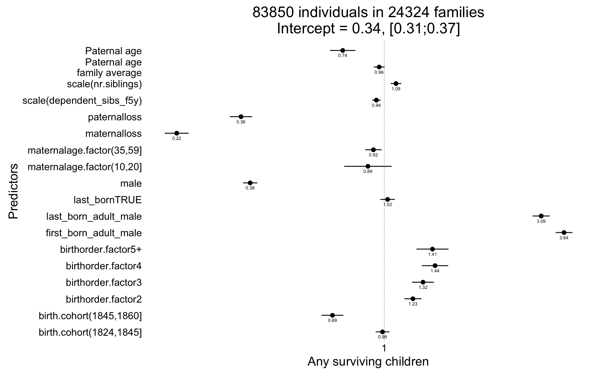
Any_surviving_children <- glmer(
any_surviving_children ~ poly(scale(birthorder),degree=2,raw=T) + region + scale(dependent_sibs_f5y) + maternalage.factor + paternalloss + maternalloss + scale(nr.siblings) + birth.cohort + male +paternalage.mean + paternalage.diff + (1|idParents),
data= ddb.1, subset = byear < 1850,
family = 'binomial', control = control_defaults )
summary(Any_surviving_children)## Generalized linear mixed model fit by maximum likelihood (Laplace
## Approximation) [glmerMod]
## Family: binomial ( logit )
## Formula: any_surviving_children ~ poly(scale(birthorder), degree = 2,
## raw = T) + region + scale(dependent_sibs_f5y) + maternalage.factor +
## paternalloss + maternalloss + scale(nr.siblings) + birth.cohort +
## male + paternalage.mean + paternalage.diff + (1 | idParents)
## Data: ddb.1
## Control: control_defaults
## Subset: byear < 1850
##
## AIC BIC logLik deviance df.resid
## 80076 80244 -40020 80040 83832
##
## Scaled residuals:
## Min 1Q Median 3Q Max
## -1.881 -0.565 -0.295 -0.093 7.488
##
## Random effects:
## Groups Name Variance Std.Dev.
## idParents (Intercept) 0.661 0.813
## Number of obs: 83850, groups: idParents, 24324
##
## Fixed effects:
## Estimate Std. Error z value
## (Intercept) -0.1815 0.0349 -5.2
## poly(scale(birthorder), degree = 2, raw = T)1 0.1350 0.0294 4.6
## poly(scale(birthorder), degree = 2, raw = T)2 -0.0297 0.0071 -4.2
## regionLinkopings -1.5789 0.0361 -43.8
## regionNorra inlands -0.0208 0.0338 -0.6
## regionSundsvalls -0.3107 0.0339 -9.2
## scale(dependent_sibs_f5y) -0.1566 0.0140 -11.2
## maternalage.factor(10,20] -0.1936 0.0821 -2.4
## maternalage.factor(35,59] -0.1101 0.0283 -3.9
## paternalloss -0.9065 0.0385 -23.6
## maternalloss -1.4188 0.0412 -34.5
## scale(nr.siblings) -0.0916 0.0197 -4.6
## birth.cohort(1824,1845] -0.1342 0.0237 -5.7
## birth.cohort(1845,1860] -0.5342 0.0378 -14.1
## male -0.0449 0.0189 -2.4
## paternalage.mean -0.0312 0.0182 -1.7
## paternalage.diff -0.3020 0.0494 -6.1
## Pr(>|z|)
## (Intercept) 0.000000196 ***
## poly(scale(birthorder), degree = 2, raw = T)1 0.000004421 ***
## poly(scale(birthorder), degree = 2, raw = T)2 0.000028490 ***
## regionLinkopings < 2e-16 ***
## regionNorra inlands 0.5382
## regionSundsvalls < 2e-16 ***
## scale(dependent_sibs_f5y) < 2e-16 ***
## maternalage.factor(10,20] 0.0184 *
## maternalage.factor(35,59] 0.0001 ***
## paternalloss < 2e-16 ***
## maternalloss < 2e-16 ***
## scale(nr.siblings) 0.000003358 ***
## birth.cohort(1824,1845] 0.000000015 ***
## birth.cohort(1845,1860] < 2e-16 ***
## male 0.0176 *
## paternalage.mean 0.0869 .
## paternalage.diff 0.000000001 ***
## ---
## Signif. codes: 0 '***' 0.001 '**' 0.01 '*' 0.05 '.' 0.1 ' ' 1
##
## Correlation of Fixed Effects:
## (Intr) p((),d=2,r=T)1 p((),d=2,r=T)2 rgnLnk rgnNri rgnSnd
## p((),d=2,r=T)1 0.114
## p((),d=2,r=T)2 -0.190 -0.597
## regnLnkpngs -0.590 -0.087 0.074
## rgnNrrinlnd -0.609 -0.054 0.035 0.541
## rgnSndsvlls -0.562 -0.032 0.034 0.554 0.540
## scl(dpn__5) -0.149 -0.230 0.315 0.156 0.091 0.125
## mtr.(10,20] -0.004 0.013 -0.027 0.004 -0.012 -0.001
## mtr.(35,59] -0.346 0.050 -0.059 0.059 0.035 0.064
## paternallss -0.077 0.016 -0.015 -0.041 -0.030 -0.023
## maternallss -0.084 -0.010 -0.002 -0.008 0.004 0.014
## scl(nr.sbl) -0.005 -0.593 0.151 0.080 0.008 0.108
## b.(1824,184 -0.497 -0.098 0.040 0.177 0.186 0.034
## b.(1845,186 -0.344 -0.060 0.010 0.151 0.126 0.035
## male -0.275 0.005 0.000 -0.006 -0.007 -0.005
## paternlg.mn -0.073 -0.266 0.080 0.023 0.001 0.039
## patrnlg.dff 0.120 -0.822 0.365 0.044 0.014 0.005
## s(__5) m.(10, m.(35, ptrnll mtrnll scl(.) b.(182 b.(184
## p((),d=2,r=T)1
## p((),d=2,r=T)2
## regnLnkpngs
## rgnNrrinlnd
## rgnSndsvlls
## scl(dpn__5)
## mtr.(10,20] 0.078
## mtr.(35,59] 0.094 -0.042
## paternallss 0.008 -0.019 0.072
## maternallss 0.022 -0.003 0.039 -0.442
## scl(nr.sbl) -0.308 -0.050 -0.041 0.062 0.060
## b.(1824,184 0.049 0.006 0.042 0.009 0.026 -0.052
## b.(1845,186 0.030 0.012 0.025 0.013 0.026 -0.052 0.429
## male 0.000 0.003 0.005 0.006 0.004 -0.002 0.002 0.000
## paternlg.mn 0.069 0.022 -0.171 0.000 0.073 0.116 0.127 0.083
## patrnlg.dff 0.160 0.079 -0.387 -0.068 -0.015 0.545 0.005 -0.004
## male ptrnlg.m
## p((),d=2,r=T)1
## p((),d=2,r=T)2
## regnLnkpngs
## rgnNrrinlnd
## rgnSndsvlls
## scl(dpn__5)
## mtr.(10,20]
## mtr.(35,59]
## paternallss
## maternallss
## scl(nr.sbl)
## b.(1824,184
## b.(1845,186
## male
## paternlg.mn -0.001
## patrnlg.dff -0.007 0.286Any_surviving_children_coefs = fortify_mine(Any_surviving_children)
plot_fortified_mer(Any_surviving_children_coefs, "Any surviving children")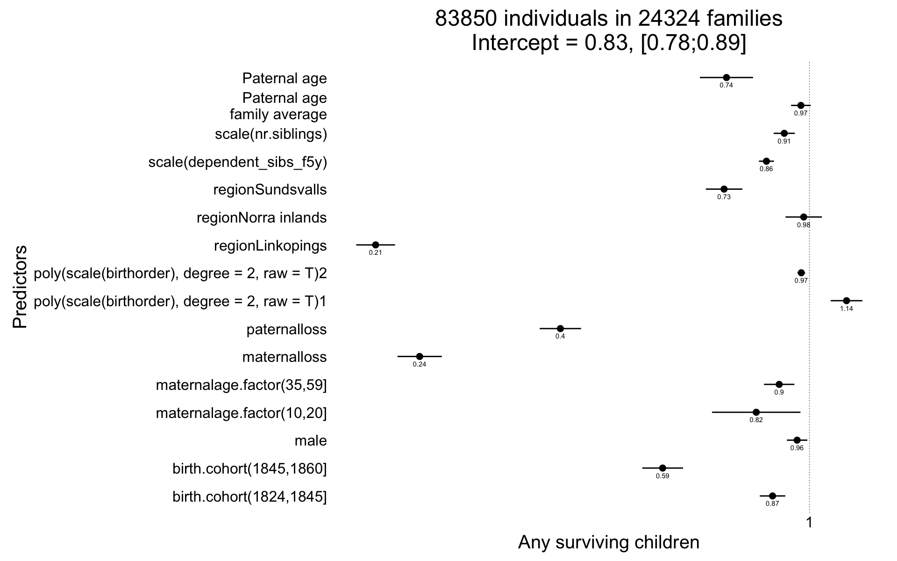
Arguably, it might be better to control for age at orphanhood than for maternal and maternal loss by age 5. We decided against this, because age at orphanhood is a somewhat ill-defined variable in this context and controlling for maternal and paternal loss separately allows each variable to have different contributions (arguably and empirically in our data, in early life, loss of the mother matters more). The following analysis shows that the paternal age effects stay stable, when this different control variable is chosen. It was computed by taking the number of years after the child’s birth at which the second parent died. The following special cases were treated:
library(dplyr);
ddb.1 %>% rowwise() %>%
mutate(age_at_orphanhood = max((dyear.Mother - byear)/10, (dyear.Father - byear)/10)) %>%
ungroup() %>%
mutate(
age_at_orphanhood = as.numeric(ifelse(age_at_orphanhood > -1 & age_at_orphanhood < 0, 0, age_at_orphanhood))
,age_at_orphanhood_bin = as.character(cut(age_at_orphanhood * 10, breaks = c(0,5,10,15,20,25,30), include.lowest=T ))
,age_at_orphanhood_bin = ifelse(age_at_orphanhood < -1000 | age_at_orphanhood >= 30, "not_orphaned", age_at_orphanhood_bin)
,age_at_orphanhood_bin = ifelse(is.na(age_at_orphanhood), "orphanhood_unclear", age_at_orphanhood_bin)
,age_at_orphanhood_bin = relevel(factor(age_at_orphanhood_bin), "[0,5]")
) %>%
data.table() ->
ddb.1
qplot(ddb.1$age_at_orphanhood_bin)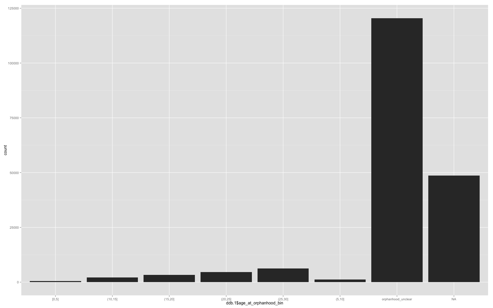
cor.test(ddb.1$paternalage, ddb.1$age_at_orphanhood)##
## Pearson's product-moment correlation
##
## data: ddb.1$paternalage and ddb.1$age_at_orphanhood
## t = -88, df = 67000, p-value <2e-16
## alternative hypothesis: true correlation is not equal to 0
## 95 percent confidence interval:
## -0.3301 -0.3165
## sample estimates:
## cor
## -0.3233cor.test(ddb.1$age, ddb.1$age_at_orphanhood)##
## Pearson's product-moment correlation
##
## data: ddb.1$age and ddb.1$age_at_orphanhood
## t = 48, df = 32000, p-value <2e-16
## alternative hypothesis: true correlation is not equal to 0
## 95 percent confidence interval:
## 0.2489 0.2693
## sample estimates:
## cor
## 0.2592Any_surviving_children <- glmer(
any_surviving_children ~ age_at_orphanhood_bin + region + center(dependent_sibs_f5y) + maternalage.factor + center(nr.siblings) + birth.cohort + male +paternalage.mean + paternalage.diff + (1|idParents),
data= ddb.1, subset = byear < 1850,
family = 'binomial', control = control_defaults )
summary(Any_surviving_children)## Generalized linear mixed model fit by maximum likelihood (Laplace
## Approximation) [glmerMod]
## Family: binomial ( logit )
## Formula:
## any_surviving_children ~ age_at_orphanhood_bin + region + center(dependent_sibs_f5y) +
## maternalage.factor + center(nr.siblings) + birth.cohort +
## male + paternalage.mean + paternalage.diff + (1 | idParents)
## Data: ddb.1
## Control: control_defaults
## Subset: byear < 1850
##
## AIC BIC logLik deviance df.resid
## 29190 29364 -14575 29150 42466
##
## Scaled residuals:
## Min 1Q Median 3Q Max
## -2.341 -0.312 -0.203 -0.121 5.246
##
## Random effects:
## Groups Name Variance Std.Dev.
## idParents (Intercept) 1.78 1.34
## Number of obs: 42486, groups: idParents, 15426
##
## Fixed effects:
## Estimate Std. Error z value
## (Intercept) -1.86283 0.27330 -6.82
## age_at_orphanhood_bin(10,15] 0.76020 0.27969 2.72
## age_at_orphanhood_bin(15,20] 0.94318 0.27359 3.45
## age_at_orphanhood_bin(20,25] 0.99941 0.27099 3.69
## age_at_orphanhood_bin(25,30] 1.22135 0.26930 4.54
## age_at_orphanhood_bin(5,10] 0.59899 0.29000 2.07
## age_at_orphanhood_binorphanhood_unclear -0.32485 0.26703 -1.22
## regionLinkopings -1.79078 0.06961 -25.73
## regionNorra inlands 0.17230 0.06952 2.48
## regionSundsvalls -0.46361 0.06901 -6.72
## center(dependent_sibs_f5y) -0.15390 0.02001 -7.69
## maternalage.factor(10,20] -0.26986 0.14206 -1.90
## maternalage.factor(35,59] 0.04688 0.05318 0.88
## center(nr.siblings) 0.06913 0.00990 6.98
## birth.cohort(1824,1845] 0.04420 0.04709 0.94
## birth.cohort(1845,1860] 0.12194 0.06409 1.90
## male -0.07531 0.03487 -2.16
## paternalage.mean 0.00403 0.03215 0.13
## paternalage.diff -0.75028 0.05126 -14.64
## Pr(>|z|)
## (Intercept) 9.4e-12 ***
## age_at_orphanhood_bin(10,15] 0.00657 **
## age_at_orphanhood_bin(15,20] 0.00057 ***
## age_at_orphanhood_bin(20,25] 0.00023 ***
## age_at_orphanhood_bin(25,30] 5.8e-06 ***
## age_at_orphanhood_bin(5,10] 0.03888 *
## age_at_orphanhood_binorphanhood_unclear 0.22377
## regionLinkopings < 2e-16 ***
## regionNorra inlands 0.01319 *
## regionSundsvalls 1.8e-11 ***
## center(dependent_sibs_f5y) 1.5e-14 ***
## maternalage.factor(10,20] 0.05749 .
## maternalage.factor(35,59] 0.37797
## center(nr.siblings) 2.9e-12 ***
## birth.cohort(1824,1845] 0.34792
## birth.cohort(1845,1860] 0.05710 .
## male 0.03078 *
## paternalage.mean 0.90034
## paternalage.diff < 2e-16 ***
## ---
## Signif. codes: 0 '***' 0.001 '**' 0.01 '*' 0.05 '.' 0.1 ' ' 1
##
## Correlation of Fixed Effects:
## (Intr) a___(10 a___(15 a___(20 a___(25 a___(5 ag____ rgnLnk
## a___(10,15] -0.900
## a___(15,20] -0.930 0.904
## a___(20,25] -0.945 0.910 0.944
## a___(25,30] -0.955 0.914 0.947 0.964
## ag___(5,10] -0.839 0.826 0.840 0.847 0.851
## ag_t_rphn__ -0.961 0.918 0.949 0.964 0.974 0.857
## regnLnkpngs -0.162 -0.002 -0.004 -0.001 0.001 -0.004 0.010
## rgnNrrinlnd -0.177 0.018 0.018 0.020 0.022 0.012 0.000 0.595
## rgnSndsvlls -0.142 0.004 -0.002 0.000 0.000 0.002 0.004 0.611
## cntr(dp__5) 0.015 -0.017 -0.018 -0.019 -0.025 -0.013 -0.018 0.111
## mtr.(10,20] -0.008 0.003 0.002 0.005 0.006 0.003 0.002 0.002
## mtr.(35,59] -0.068 -0.016 -0.018 -0.023 -0.019 -0.007 0.000 0.069
## cntr(nr.sb) 0.032 -0.011 -0.021 -0.025 -0.028 -0.004 -0.015 0.065
## b.(1824,184 -0.124 -0.002 0.003 0.000 -0.001 -0.001 -0.013 0.196
## b.(1845,186 -0.099 0.003 0.002 0.005 0.011 0.000 -0.016 0.174
## male -0.069 0.009 0.008 0.006 0.006 0.003 0.009 -0.010
## paternlg.mn -0.032 -0.001 -0.003 -0.002 0.000 -0.004 0.037 0.012
## patrnlg.dff 0.007 0.021 0.029 0.043 0.051 0.008 0.077 -0.030
## rgnNri rgnSnd c(__5) m.(10, m.(35, cnt(.) b.(182 b.(184 male
## a___(10,15]
## a___(15,20]
## a___(20,25]
## a___(25,30]
## ag___(5,10]
## ag_t_rphn__
## regnLnkpngs
## rgnNrrinlnd
## rgnSndsvlls 0.560
## cntr(dp__5) 0.064 0.091
## mtr.(10,20] -0.004 0.003 0.094
## mtr.(35,59] 0.034 0.046 0.126 -0.044
## cntr(nr.sb) -0.010 0.126 -0.532 -0.072 -0.083
## b.(1824,184 0.220 0.032 0.027 -0.004 0.039 -0.169
## b.(1845,186 0.169 0.020 0.012 0.025 0.024 -0.188 0.514
## male -0.008 -0.008 0.005 0.008 0.004 -0.006 -0.001 -0.007
## paternlg.mn -0.035 0.026 0.020 0.024 -0.196 -0.090 0.110 0.072 -0.004
## patrnlg.dff -0.056 -0.005 0.039 0.166 -0.588 0.049 -0.109 -0.078 0.006
## ptrnlg.m
## a___(10,15]
## a___(15,20]
## a___(20,25]
## a___(25,30]
## ag___(5,10]
## ag_t_rphn__
## regnLnkpngs
## rgnNrrinlnd
## rgnSndsvlls
## cntr(dp__5)
## mtr.(10,20]
## mtr.(35,59]
## cntr(nr.sb)
## b.(1824,184
## b.(1845,186
## male
## paternlg.mn
## patrnlg.dff 0.142Any_surviving_children_coefs = fortify_mine(Any_surviving_children)
plot_fortified_mer(Any_surviving_children_coefs, "Any surviving children")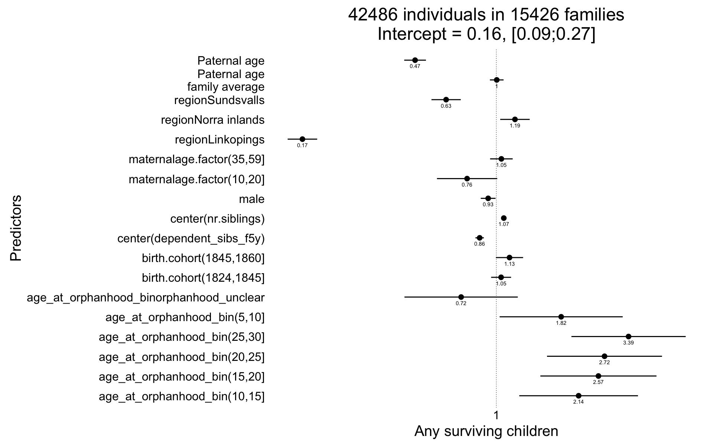
Here, we use two random effects for mothers and fathers instead of parent/family-wise IDs. This increases the model complexity, but our effects are robust to this.
ddb.1 = ddb.1[order(idPere),]
ddb.1 = recenter.pat(ddb.1,what = "paternalage","idPere")
Any_surviving_children <- glmer(
any_surviving_children ~ region + center(dependent_sibs_f5y) + maternalage.factor + paternalloss + maternalloss + center(nr.siblings) + birth.cohort + male +paternalage.mean + paternalage.diff + (1|idPere) + (1|idMere),
data= ddb.1, subset = byear < 1850,
family = 'binomial', control = control_defaults )
summary(Any_surviving_children)## Generalized linear mixed model fit by maximum likelihood (Laplace
## Approximation) [glmerMod]
## Family: binomial ( logit )
## Formula: any_surviving_children ~ region + center(dependent_sibs_f5y) +
## maternalage.factor + paternalloss + maternalloss + center(nr.siblings) +
## birth.cohort + male + paternalage.mean + paternalage.diff +
## (1 | idPere) + (1 | idMere)
## Data: ddb.1
## Control: control_defaults
## Subset: byear < 1850
##
## AIC BIC logLik deviance df.resid
## 80060 80219 -40013 80026 83833
##
## Scaled residuals:
## Min 1Q Median 3Q Max
## -1.858 -0.566 -0.295 -0.094 7.432
##
## Random effects:
## Groups Name Variance Std.Dev.
## idMere (Intercept) 0.324 0.569
## idPere (Intercept) 0.330 0.575
## Number of obs: 83850, groups: idMere, 23549; idPere, 23079
##
## Fixed effects:
## Estimate Std. Error z value Pr(>|z|)
## (Intercept) -0.19472 0.03407 -5.7 0.000000011 ***
## regionLinkopings -1.56863 0.03607 -43.5 < 2e-16 ***
## regionNorra inlands -0.01638 0.03394 -0.5 0.6294
## regionSundsvalls -0.30639 0.03399 -9.0 < 2e-16 ***
## center(dependent_sibs_f5y) -0.10948 0.01051 -10.4 < 2e-16 ***
## maternalage.factor(10,20] -0.18621 0.08174 -2.3 0.0227 *
## maternalage.factor(35,59] -0.14083 0.02690 -5.2 0.000000164 ***
## paternalloss -0.90339 0.03863 -23.4 < 2e-16 ***
## maternalloss -1.43207 0.04098 -34.9 < 2e-16 ***
## center(nr.siblings) -0.01508 0.00511 -3.0 0.0032 **
## birth.cohort(1824,1845] -0.12920 0.02362 -5.5 0.000000045 ***
## birth.cohort(1845,1860] -0.53250 0.03775 -14.1 < 2e-16 ***
## male -0.04645 0.01891 -2.5 0.0140 *
## paternalage.mean -0.00999 0.01860 -0.5 0.5910
## paternalage.diff -0.09648 0.02326 -4.1 0.000033645 ***
## ---
## Signif. codes: 0 '***' 0.001 '**' 0.01 '*' 0.05 '.' 0.1 ' ' 1
##
## Correlation of Fixed Effects:
## (Intr) rgnLnk rgnNri rgnSnd c(__5) m.(10, m.(35, ptrnll mtrnll
## regnLnkpngs -0.594
## rgnNrrinlnd -0.614 0.537
## rgnSndsvlls -0.571 0.553 0.538
## cntr(dp__5) -0.099 0.136 0.082 0.119
## mtr.(10,20] -0.018 0.006 -0.009 0.001 0.090
## mtr.(35,59] -0.336 0.064 0.032 0.065 0.128 -0.023
## paternallss -0.097 -0.038 -0.026 -0.020 0.014 -0.023 0.086
## maternallss -0.060 -0.012 -0.001 0.010 0.023 0.007 0.003 -0.447
## cntr(nr.sb) 0.027 0.047 -0.031 0.124 -0.537 -0.066 -0.017 0.088 0.075
## b.(1824,184 -0.503 0.170 0.180 0.033 0.036 0.009 0.034 0.021 0.013
## b.(1845,186 -0.352 0.148 0.121 0.034 0.026 0.013 0.018 0.022 0.016
## male -0.280 -0.005 -0.007 -0.005 0.000 0.004 0.004 0.006 0.004
## paternlg.mn -0.087 0.008 -0.011 0.037 0.035 0.020 -0.173 0.036 0.042
## patrnlg.dff 0.329 -0.044 -0.048 -0.031 0.012 0.141 -0.596 -0.139 0.021
## cnt(.) b.(182 b.(184 male ptrnlg.m
## regnLnkpngs
## rgnNrrinlnd
## rgnSndsvlls
## cntr(dp__5)
## mtr.(10,20]
## mtr.(35,59]
## paternallss
## maternallss
## cntr(nr.sb)
## b.(1824,184 -0.153
## b.(1845,186 -0.125 0.429
## male 0.003 0.002 0.000
## paternlg.mn -0.094 0.123 0.081 -0.001
## patrnlg.dff 0.025 -0.146 -0.109 -0.001 0.106Any_surviving_children_coefs = fortify_mine(Any_surviving_children)
plot_fortified_mer(Any_surviving_children_coefs, "Any surviving children")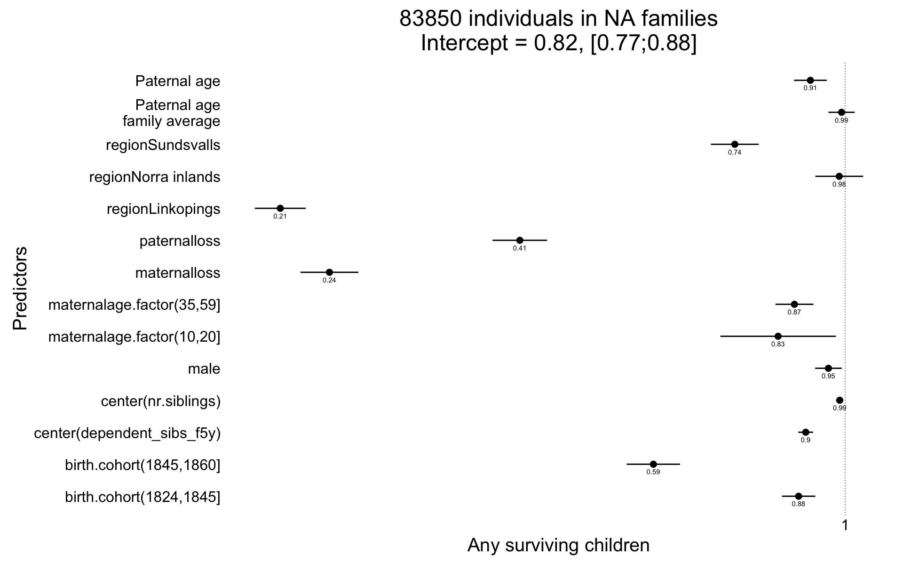
We divide birth cohort into 5-year bins instead of 5 equally sized bins (and summarise the smallest bins).
ddb.1[, birth.cohort_bin := as.character(round_any(byear, 5))]
ddb.1[byear <= 1645, birth.cohort_bin := "1630-1645"]
table(ddb.1$birth.cohort_bin)##
## 1735 1740 1745 1750 1755 1760 1765 1770 1775 1780 1785 1790
## 11 82 126 171 180 519 555 486 597 730 731 1793
## 1795 1800 1805 1810 1815 1820 1825 1830 1835 1840 1845 1850
## 2563 2817 3958 4573 6440 8190 9057 9120 9166 8867 9885 10692
## 1855 1860 1865 1870 1875 1880
## 12558 15205 16739 16700 21027 13583Any_surviving_children <- glmer(
any_surviving_children ~ region + center(dependent_sibs_f5y) + maternalage.factor + paternalloss + maternalloss + center(nr.siblings) + birth.cohort_bin + male +paternalage.mean + paternalage.diff + (1|idParents),
data= ddb.1, subset = byear < 1850,
family = 'binomial', control = control_defaults )## Warning in commonArgs(par, fn, control, environment()): maxfun < 10 *
## length(par)^2 is not recommended.## Warning in optwrap(optimizer, devfun, start, rho$lower, control =
## control, : convergence code 1 from bobyqa: bobyqa -- maximum number of
## function evaluations exceeded## Warning in checkConv(attr(opt, "derivs"), opt$par, ctrl = control
## $checkConv, : Model failed to converge with max|grad| = 0.0263981 (tol =
## 0.001, component 1)## Warning in checkConv(attr(opt, "derivs"), opt$par, ctrl = control$checkConv, : Model is nearly unidentifiable: large eigenvalue ratio
## - Rescale variables?summary(Any_surviving_children)## Generalized linear mixed model fit by maximum likelihood (Laplace
## Approximation) [glmerMod]
## Family: binomial ( logit )
## Formula: any_surviving_children ~ region + center(dependent_sibs_f5y) +
## maternalage.factor + paternalloss + maternalloss + center(nr.siblings) +
## birth.cohort_bin + male + paternalage.mean + paternalage.diff +
## (1 | idParents)
## Data: ddb.1
## Control: control_defaults
## Subset: byear < 1850
##
## AIC BIC logLik deviance df.resid
## 80029 80374 -39978 79955 83813
##
## Scaled residuals:
## Min 1Q Median 3Q Max
## -1.819 -0.566 -0.295 -0.093 8.303
##
## Random effects:
## Groups Name Variance Std.Dev.
## idParents (Intercept) 0.643 0.802
## Number of obs: 83850, groups: idParents, 24324
##
## Fixed effects:
## Estimate Std. Error z value Pr(>|z|)
## (Intercept) -0.32145 0.82891 -0.4 0.698
## regionLinkopings -1.56241 0.03672 -42.5 < 2e-16 ***
## regionNorra inlands 0.01287 0.03506 0.4 0.714
## regionSundsvalls -0.30477 0.03379 -9.0 < 2e-16 ***
## center(dependent_sibs_f5y) -0.11472 0.01056 -10.9 < 2e-16 ***
## maternalage.factor(10,20] -0.19178 0.08185 -2.3 0.019 *
## maternalage.factor(35,59] -0.13399 0.02703 -5.0 0.00000072 ***
## paternalloss -0.90775 0.03859 -23.5 < 2e-16 ***
## maternalloss -1.42892 0.04094 -34.9 < 2e-16 ***
## center(nr.siblings) -0.01283 0.00513 -2.5 0.012 *
## birth.cohort_bin1740 0.66288 0.87261 0.8 0.447
## birth.cohort_bin1745 1.02478 0.85598 1.2 0.231
## birth.cohort_bin1750 0.38165 0.85573 0.4 0.656
## birth.cohort_bin1755 0.60042 0.85376 0.7 0.482
## birth.cohort_bin1760 -0.02017 0.83735 0.0 0.981
## birth.cohort_bin1765 0.24637 0.83604 0.3 0.768
## birth.cohort_bin1770 0.30478 0.83713 0.4 0.716
## birth.cohort_bin1775 -0.16178 0.83619 -0.2 0.847
## birth.cohort_bin1780 -0.14622 0.83481 -0.2 0.861
## birth.cohort_bin1785 -0.20321 0.83481 -0.2 0.808
## birth.cohort_bin1790 -0.08154 0.83156 -0.1 0.922
## birth.cohort_bin1795 0.00637 0.83057 0.0 0.994
## birth.cohort_bin1800 0.20254 0.83021 0.2 0.807
## birth.cohort_bin1805 0.07344 0.82949 0.1 0.929
## birth.cohort_bin1810 0.14346 0.82934 0.2 0.863
## birth.cohort_bin1815 0.09895 0.82889 0.1 0.905
## birth.cohort_bin1820 0.17028 0.82876 0.2 0.837
## birth.cohort_bin1825 0.17148 0.82877 0.2 0.836
## birth.cohort_bin1830 0.07841 0.82878 0.1 0.925
## birth.cohort_bin1835 0.00881 0.82881 0.0 0.992
## birth.cohort_bin1840 -0.07476 0.82884 -0.1 0.928
## birth.cohort_bin1845 -0.28674 0.82886 -0.3 0.729
## birth.cohort_bin1850 -0.46308 0.82958 -0.6 0.577
## male -0.04598 0.01891 -2.4 0.015 *
## paternalage.mean -0.00944 0.01851 -0.5 0.610
## paternalage.diff -0.09293 0.02363 -3.9 0.00008386 ***
## ---
## Signif. codes: 0 '***' 0.001 '**' 0.01 '*' 0.05 '.' 0.1 ' ' 1##
## Correlation matrix not shown by default, as p = 36 > 20.
## Use print(x, correlation=TRUE) or
## vcov(x) if you need it## convergence code: 1
## Model failed to converge with max|grad| = 0.0263981 (tol = 0.001, component 1)
## Model is nearly unidentifiable: large eigenvalue ratio
## - Rescale variables?
## maxfun < 10 * length(par)^2 is not recommended.Any_surviving_children_coefs = fortify_mine(Any_surviving_children)
plot_fortified_mer(Any_surviving_children_coefs, "Any surviving children")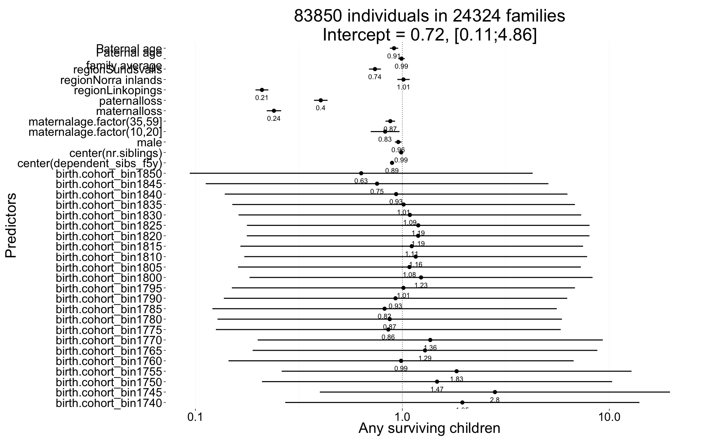
We use a continuous predictor for birth date instead of 5 equally sized bins (and summarise the smallest bins). Additionally, we allow a third-degree polynomial.
ddb.1[, birth.cohort_cont := scale(bdate)]
Any_surviving_children <- glmer(
any_surviving_children ~ region + center(dependent_sibs_f5y) + maternalage.factor + paternalloss + maternalloss + center(nr.siblings) + poly(birth.cohort_cont,3,raw=T) + male +paternalage.mean + paternalage.diff + (1|idParents),
data= ddb.1, subset = byear < 1850,
family = 'binomial', control = control_defaults )
summary(Any_surviving_children)## Generalized linear mixed model fit by maximum likelihood (Laplace
## Approximation) [glmerMod]
## Family: binomial ( logit )
## Formula: any_surviving_children ~ region + center(dependent_sibs_f5y) +
## maternalage.factor + paternalloss + maternalloss + center(nr.siblings) +
## poly(birth.cohort_cont, 3, raw = T) + male + paternalage.mean +
## paternalage.diff + (1 | idParents)
## Data: ddb.1
## Control: control_defaults
## Subset: byear < 1850
##
## AIC BIC logLik deviance df.resid
## 80011 80170 -39989 79977 83833
##
## Scaled residuals:
## Min 1Q Median 3Q Max
## -2.290 -0.565 -0.296 -0.093 7.971
##
## Random effects:
## Groups Name Variance Std.Dev.
## idParents (Intercept) 0.644 0.802
## Number of obs: 83850, groups: idParents, 24324
##
## Fixed effects:
## Estimate Std. Error z value Pr(>|z|)
## (Intercept) -0.70087 0.03554 -19.7 < 2e-16
## regionLinkopings -1.55675 0.03634 -42.8 < 2e-16
## regionNorra inlands 0.01385 0.03495 0.4 0.69186
## regionSundsvalls -0.30470 0.03371 -9.0 < 2e-16
## center(dependent_sibs_f5y) -0.11317 0.01051 -10.8 < 2e-16
## maternalage.factor(10,20] -0.18774 0.08178 -2.3 0.02169
## maternalage.factor(35,59] -0.13475 0.02700 -5.0 0.0000006
## paternalloss -0.90800 0.03859 -23.5 < 2e-16
## maternalloss -1.42933 0.04094 -34.9 < 2e-16
## center(nr.siblings) -0.01222 0.00511 -2.4 0.01681
## poly(birth.cohort_cont, 3, raw = T)1 -1.16120 0.07440 -15.6 < 2e-16
## poly(birth.cohort_cont, 3, raw = T)2 -0.75231 0.05948 -12.6 < 2e-16
## poly(birth.cohort_cont, 3, raw = T)3 -0.13525 0.01220 -11.1 < 2e-16
## male -0.04593 0.01890 -2.4 0.01511
## paternalage.mean -0.01204 0.01848 -0.7 0.51449
## paternalage.diff -0.08825 0.02354 -3.7 0.00018
##
## (Intercept) ***
## regionLinkopings ***
## regionNorra inlands
## regionSundsvalls ***
## center(dependent_sibs_f5y) ***
## maternalage.factor(10,20] *
## maternalage.factor(35,59] ***
## paternalloss ***
## maternalloss ***
## center(nr.siblings) *
## poly(birth.cohort_cont, 3, raw = T)1 ***
## poly(birth.cohort_cont, 3, raw = T)2 ***
## poly(birth.cohort_cont, 3, raw = T)3 ***
## male *
## paternalage.mean
## paternalage.diff ***
## ---
## Signif. codes: 0 '***' 0.001 '**' 0.01 '*' 0.05 '.' 0.1 ' ' 1
##
## Correlation of Fixed Effects:
## (Intr) rgnLnk rgnNri rgnSnd c(__5) m.(10, m.(35, ptrnll
## regnLnkpngs -0.417
## rgnNrrinlnd -0.477 0.556
## rgnSndsvlls -0.507 0.546 0.519
## cntr(dp__5) -0.044 0.134 0.074 0.121
## mtr.(10,20] -0.007 0.009 -0.005 0.001 0.091
## mtr.(35,59] -0.305 0.063 0.034 0.065 0.125 -0.025
## paternallss -0.067 -0.033 -0.023 -0.019 0.015 -0.022 0.083
## maternallss -0.043 -0.009 0.003 0.011 0.022 0.006 0.007 -0.445
## cntr(nr.sb) -0.129 0.033 -0.042 0.122 -0.537 -0.067 -0.015 0.086
## p(._,3,r=T)1 0.553 0.013 -0.088 0.016 0.051 0.003 0.001 0.012
## p(._,3,r=T)2 0.451 -0.059 -0.159 0.000 0.041 -0.002 -0.004 0.001
## p(._,3,r=T)3 0.378 -0.068 -0.151 -0.008 0.035 -0.002 -0.004 -0.003
## male -0.266 -0.006 -0.008 -0.005 0.000 0.004 0.004 0.006
## paternlg.mn 0.008 0.020 0.007 0.037 0.034 0.022 -0.176 0.040
## patrnlg.dff 0.185 -0.052 -0.058 -0.030 0.012 0.141 -0.599 -0.136
## mtrnll cnt(.) p(._,3,r=T)1 p(._,3,r=T)2 p(._,3,r=T)3 male
## regnLnkpngs
## rgnNrrinlnd
## rgnSndsvlls
## cntr(dp__5)
## mtr.(10,20]
## mtr.(35,59]
## paternallss
## maternallss
## cntr(nr.sb) 0.073
## p(._,3,r=T)1 0.013 -0.084
## p(._,3,r=T)2 0.008 -0.030 0.935
## p(._,3,r=T)3 0.008 -0.014 0.852 0.975
## male 0.004 0.003 0.002 0.001 0.000
## paternlg.mn 0.039 -0.094 0.011 -0.029 -0.035 -0.001
## patrnlg.dff 0.012 0.027 -0.063 -0.021 -0.011 -0.001
## ptrnlg.m
## regnLnkpngs
## rgnNrrinlnd
## rgnSndsvlls
## cntr(dp__5)
## mtr.(10,20]
## mtr.(35,59]
## paternallss
## maternallss
## cntr(nr.sb)
## p(._,3,r=T)1
## p(._,3,r=T)2
## p(._,3,r=T)3
## male
## paternlg.mn
## patrnlg.dff 0.108Any_surviving_children_coefs = fortify_mine(Any_surviving_children)
plot_fortified_mer(Any_surviving_children_coefs, "Any surviving children")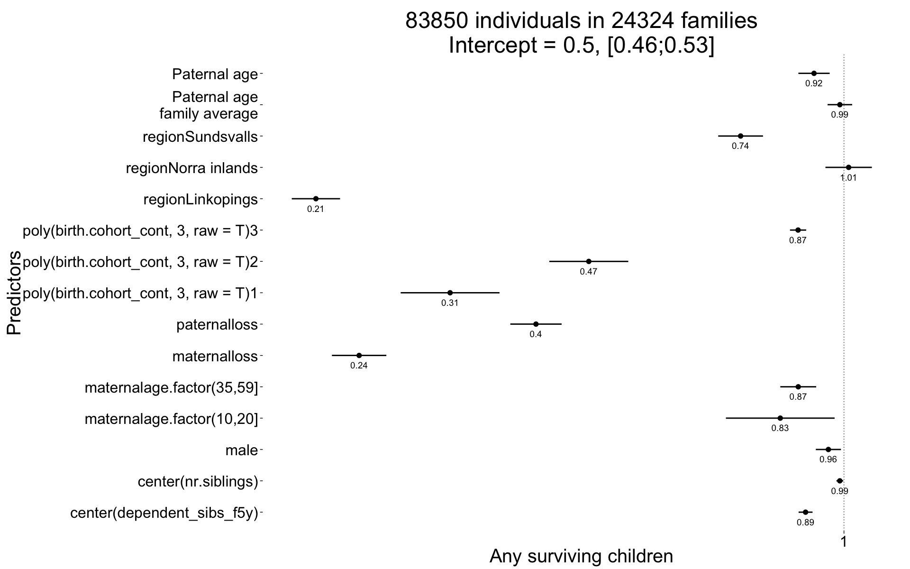
Here, we check whether the effect on number of surviving children is mediated by age. This seems to be partially the case, the effect of paternal age is no longer significant.
ddb.1$age_bins = factor(relevel(factor(cut(round(ddb.1$age,1),c(0, 2.5, 5,12), include.lowest = T)), "(2.5,5]"),exclude = NULL)
Any_surviving_children <- glmer(
any_surviving_children ~ age_bins + center(dependent_sibs_f5y) + maternalage.factor + paternalloss + maternalloss + center(nr.siblings) + birth.cohort + male + region + paternalage.mean + paternalage.diff + (1|idParents),
data= ddb.1, subset = byear < 1850,
family = 'binomial', control = control_defaults )
summary(Any_surviving_children)## Generalized linear mixed model fit by maximum likelihood (Laplace
## Approximation) [glmerMod]
## Family: binomial ( logit )
## Formula: any_surviving_children ~ age_bins + center(dependent_sibs_f5y) +
## maternalage.factor + paternalloss + maternalloss + center(nr.siblings) +
## birth.cohort + male + region + paternalage.mean + paternalage.diff +
## (1 | idParents)
## Data: ddb.1
## Control: control_defaults
## Subset: byear < 1850
##
## AIC BIC logLik deviance df.resid
## 59229 59406 -29595 59191 83831
##
## Scaled residuals:
## Min 1Q Median 3Q Max
## -4.53 -0.37 -0.11 -0.01 39.26
##
## Random effects:
## Groups Name Variance Std.Dev.
## idParents (Intercept) 0.739 0.86
## Number of obs: 83850, groups: idParents, 24324
##
## Fixed effects:
## Estimate Std. Error z value Pr(>|z|)
## (Intercept) 0.47736 0.04890 9.8 < 2e-16 ***
## age_bins[0,2.5] -6.03740 0.12177 -49.6 < 2e-16 ***
## age_bins(5,12] 1.41743 0.04598 30.8 < 2e-16 ***
## age_binsNA -1.09546 0.03562 -30.8 < 2e-16 ***
## center(dependent_sibs_f5y) -0.07741 0.01236 -6.3 3.8e-10 ***
## maternalage.factor(10,20] -0.15443 0.09786 -1.6 0.11457
## maternalage.factor(35,59] -0.08002 0.03188 -2.5 0.01206 *
## paternalloss -0.94355 0.04393 -21.5 < 2e-16 ***
## maternalloss -1.34215 0.04614 -29.1 < 2e-16 ***
## center(nr.siblings) -0.00360 0.00595 -0.6 0.54501
## birth.cohort(1824,1845] 0.28983 0.02851 10.2 < 2e-16 ***
## birth.cohort(1845,1860] 0.00051 0.04322 0.0 0.99059
## male 0.01942 0.02249 0.9 0.38797
## regionLinkopings -1.39471 0.04065 -34.3 < 2e-16 ***
## regionNorra inlands 0.13105 0.03898 3.4 0.00077 ***
## regionSundsvalls -0.14491 0.03871 -3.7 0.00018 ***
## paternalage.mean -0.01320 0.02170 -0.6 0.54297
## paternalage.diff -0.02595 0.02786 -0.9 0.35171
## ---
## Signif. codes: 0 '***' 0.001 '**' 0.01 '*' 0.05 '.' 0.1 ' ' 1
##
## Correlation of Fixed Effects:
## (Intr) a_[0,2 a_(5,1 ag_bNA c(__5) m.(10, m.(35, ptrnll mtrnll
## ag_b[0,2.5] -0.168
## ag_bn(5,12] -0.493 0.165
## age_binsNA -0.561 0.256 0.606
## cntr(dp__5) -0.081 0.001 -0.011 -0.009
## mtr.(10,20] -0.021 0.001 0.001 0.005 0.094
## mtr.(35,59] -0.275 -0.001 -0.005 0.004 0.125 -0.021
## paternallss -0.065 0.014 -0.020 -0.020 0.002 -0.025 0.077
## maternallss -0.030 0.012 -0.021 -0.036 -0.003 0.000 0.004 -0.476
## cntr(nr.sb) 0.028 -0.007 -0.001 -0.010 -0.549 -0.070 -0.027 0.095 0.086
## b.(1824,184 -0.410 -0.010 0.141 -0.071 0.031 0.010 0.030 0.017 0.013
## b.(1845,186 -0.299 0.003 0.112 -0.056 0.016 0.015 0.016 0.024 0.019
## male -0.233 -0.008 0.004 0.025 -0.002 0.002 0.002 0.000 -0.004
## regnLnkpngs -0.454 0.020 -0.049 -0.044 0.119 0.003 0.058 -0.023 -0.004
## rgnNrrinlnd -0.464 -0.018 -0.018 -0.026 0.075 -0.006 0.028 -0.026 -0.007
## rgnSndsvlls -0.429 -0.010 -0.020 -0.041 0.121 0.005 0.061 -0.024 0.005
## paternlg.mn -0.076 0.002 -0.001 0.011 0.035 0.017 -0.167 0.034 0.044
## patrnlg.dff 0.258 -0.002 0.005 -0.003 0.002 0.138 -0.600 -0.131 0.014
## cnt(.) b.(182 b.(184 male rgnLnk rgnNri rgnSnd ptrnlg.m
## ag_b[0,2.5]
## ag_bn(5,12]
## age_binsNA
## cntr(dp__5)
## mtr.(10,20]
## mtr.(35,59]
## paternallss
## maternallss
## cntr(nr.sb)
## b.(1824,184 -0.139
## b.(1845,186 -0.117 0.479
## male 0.001 -0.006 -0.012
## regnLnkpngs 0.069 0.163 0.151 -0.018
## rgnNrrinlnd -0.024 0.162 0.115 -0.007 0.531
## rgnSndsvlls 0.123 0.031 0.030 -0.009 0.561 0.530
## paternlg.mn -0.103 0.120 0.081 -0.003 0.007 -0.015 0.035
## patrnlg.dff 0.038 -0.121 -0.093 -0.001 -0.038 -0.042 -0.027 0.104Any_surviving_children_coefs = fortify_mine(Any_surviving_children)
plot_fortified_mer(Any_surviving_children_coefs, "Any surviving children")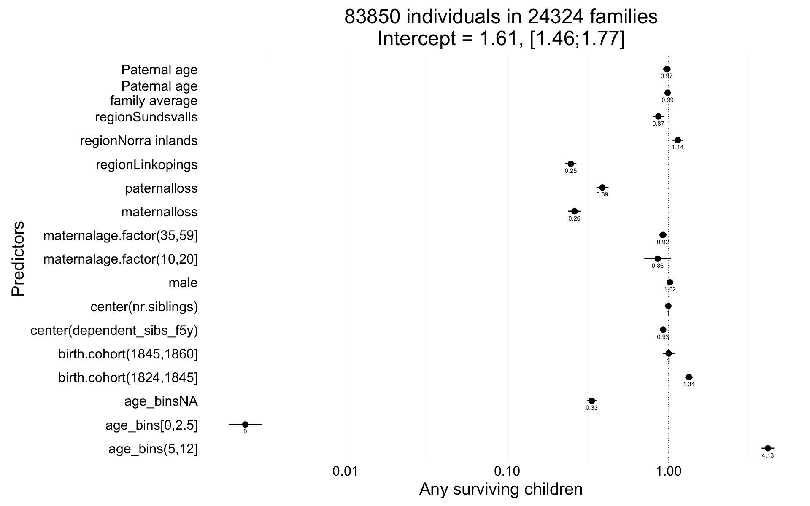
plot_residuals(Any_surviving_children)## Error: Unknown parameters: familyIn our main analyses, we controlled for the father’s average age at reproduction in each family to ensure that the effects of paternal age would be interpretable strictly as within-family. It is also common to instead control for the father’s (or mother’s age at first birth). Here, we show that this choice does not matter much for our central results.
Any_surviving_children <- glmer(
any_surviving_children ~ region + scale(dependent_sibs_f5y) + maternalage.factor + paternalloss + maternalloss + scale(nr.siblings) + birth.cohort + male + paternalage_at_1st_sib + paternalage.diff + paternalage.mean + (1|idParents),
data= ddb.1, subset = byear < 1850,
family = 'binomial', control = control_defaults )
summary(Any_surviving_children)## Generalized linear mixed model fit by maximum likelihood (Laplace
## Approximation) [glmerMod]
## Family: binomial ( logit )
## Formula: any_surviving_children ~ region + scale(dependent_sibs_f5y) +
## maternalage.factor + paternalloss + maternalloss + scale(nr.siblings) +
## birth.cohort + male + paternalage_at_1st_sib + paternalage.diff +
## paternalage.mean + (1 | idParents)
## Data: ddb.1
## Control: control_defaults
## Subset: byear < 1850
##
## AIC BIC logLik deviance df.resid
## 80103 80262 -40035 80069 83833
##
## Scaled residuals:
## Min 1Q Median 3Q Max
## -1.853 -0.567 -0.295 -0.094 7.433
##
## Random effects:
## Groups Name Variance Std.Dev.
## idParents (Intercept) 0.648 0.805
## Number of obs: 83850, groups: idParents, 24324
##
## Fixed effects:
## Estimate Std. Error z value Pr(>|z|)
## (Intercept) -0.15417 0.12952 -1.2 0.2339
## regionLinkopings -1.56627 0.03609 -43.4 < 2e-16 ***
## regionNorra inlands -0.01553 0.03390 -0.5 0.6470
## regionSundsvalls -0.30650 0.03379 -9.1 < 2e-16 ***
## scale(dependent_sibs_f5y) -0.13577 0.01326 -10.2 < 2e-16 ***
## maternalage.factor(10,20] -0.19062 0.08174 -2.3 0.0197 *
## maternalage.factor(35,59] -0.13706 0.02702 -5.1 0.000000392 ***
## paternalloss -0.90569 0.03876 -23.4 < 2e-16 ***
## maternalloss -1.42990 0.04095 -34.9 < 2e-16 ***
## scale(nr.siblings) -0.04940 0.01816 -2.7 0.0065 **
## birth.cohort(1824,1845] -0.12799 0.02375 -5.4 0.000000071 ***
## birth.cohort(1845,1860] -0.53009 0.03781 -14.0 < 2e-16 ***
## male -0.04545 0.01890 -2.4 0.0162 *
## paternalage_at_1st_sib -0.01544 0.04290 -0.4 0.7190
## paternalage.diff -0.09940 0.02377 -4.2 0.000028812 ***
## paternalage.mean 0.00134 0.04184 0.0 0.9745
## ---
## Signif. codes: 0 '***' 0.001 '**' 0.01 '*' 0.05 '.' 0.1 ' ' 1
##
## Correlation of Fixed Effects:
## (Intr) rgnLnk rgnNri rgnSnd s(__5) m.(10, m.(35, ptrnll mtrnll
## regnLnkpngs -0.276
## rgnNrrinlnd -0.284 0.546
## rgnSndsvlls -0.208 0.556 0.542
## scl(dpn__5) 0.078 0.122 0.067 0.113
## mtr.(10,20] -0.010 0.007 -0.009 0.001 0.090
## mtr.(35,59] -0.117 0.067 0.037 0.067 0.123 -0.025
## paternallss 0.073 -0.050 -0.041 -0.026 0.026 -0.023 0.079
## maternallss -0.052 -0.007 0.005 0.013 0.018 0.006 0.008 -0.446
## scl(nr.sbl) -0.539 0.110 0.048 0.136 -0.501 -0.052 0.003 0.016 0.082
## b.(1824,184 -0.251 0.184 0.194 0.040 0.022 0.010 0.036 0.008 0.017
## b.(1845,186 -0.175 0.157 0.132 0.039 0.016 0.014 0.020 0.013 0.019
## male -0.077 -0.005 -0.007 -0.005 0.000 0.004 0.004 0.006 0.004
## ptrnlg_t_1_ -0.965 0.126 0.129 0.061 -0.107 0.006 0.029 -0.101 0.037
## patrnlg.dff 0.222 -0.060 -0.066 -0.038 0.028 0.140 -0.598 -0.118 0.009
## paternlg.mn 0.856 -0.109 -0.121 -0.038 0.112 0.004 -0.103 0.108 -0.016
## scl(.) b.(182 b.(184 male pt__1_ ptrnlg.d
## regnLnkpngs
## rgnNrrinlnd
## rgnSndsvlls
## scl(dpn__5)
## mtr.(10,20]
## mtr.(35,59]
## paternallss
## maternallss
## scl(nr.sbl)
## b.(1824,184 -0.055
## b.(1845,186 -0.055 0.433
## male 0.004 0.002 0.000
## ptrnlg_t_1_ 0.565 0.124 0.086 0.004
## patrnlg.dff -0.060 -0.155 -0.115 -0.002 -0.141
## paternlg.mn -0.540 -0.057 -0.041 -0.004 -0.897 0.175Any_surviving_children_coefs = fortify_mine(Any_surviving_children)
plot_fortified_mer(Any_surviving_children_coefs, "Any surviving children")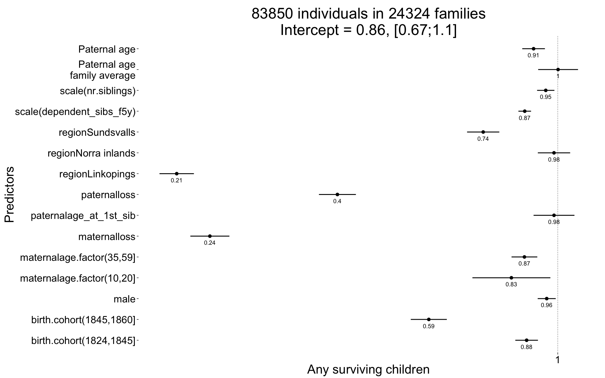
plot_zero_infl(ddb.1[surviveR==T, children.surviving5y])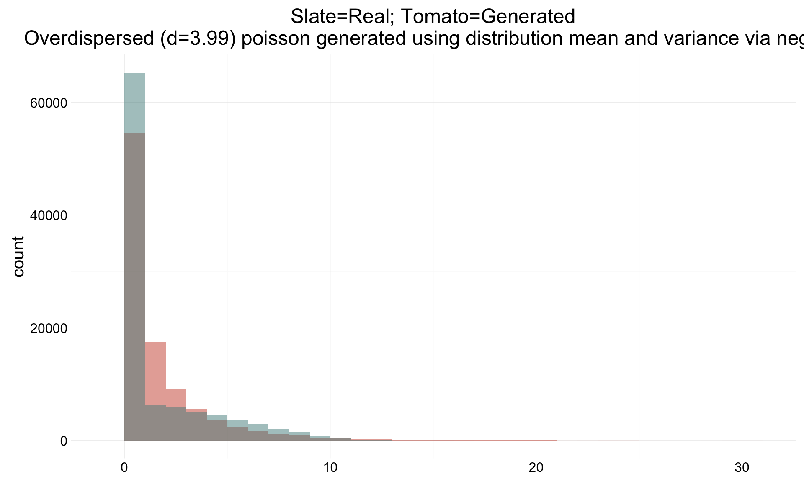
Children_surviving_5y <- glmer(
children.surviving5y ~ region + scale(dependent_sibs_f5y) + maternalage.factor + paternalloss + maternalloss + scale(nr.siblings) + birth.cohort + male + paternalage.diff + paternalage.mean + (1|idParents),
data= ddb.1, subset = byear < 1850 & surviveR==T,
family = 'poisson', control = control_defaults )
summary(Children_surviving_5y)## Generalized linear mixed model fit by maximum likelihood (Laplace
## Approximation) [glmerMod]
## Family: poisson ( log )
## Formula:
## children.surviving5y ~ region + scale(dependent_sibs_f5y) + maternalage.factor +
## paternalloss + maternalloss + scale(nr.siblings) + birth.cohort +
## male + paternalage.diff + paternalage.mean + (1 | idParents)
## Data: ddb.1
## Control: control_defaults
## Subset: byear < 1850 & surviveR == T
##
## AIC BIC logLik deviance df.resid
## 203542 203683 -101755 203510 48491
##
## Scaled residuals:
## Min 1Q Median 3Q Max
## -2.823 -0.925 -0.524 0.637 9.344
##
## Random effects:
## Groups Name Variance Std.Dev.
## idParents (Intercept) 0.987 0.993
## Number of obs: 48507, groups: idParents, 17246
##
## Fixed effects:
## Estimate Std. Error z value Pr(>|z|)
## (Intercept) 0.60795 0.02384 25.5 < 2e-16 ***
## regionLinkopings -1.14277 0.02804 -40.8 < 2e-16 ***
## regionNorra inlands 0.08090 0.02753 2.9 0.0033 **
## regionSundsvalls -0.32584 0.02716 -12.0 < 2e-16 ***
## scale(dependent_sibs_f5y) -0.00887 0.00561 -1.6 0.1141
## maternalage.factor(10,20] 0.04831 0.03392 1.4 0.1543
## maternalage.factor(35,59] -0.01168 0.01259 -0.9 0.3537
## paternalloss -0.19226 0.02147 -9.0 < 2e-16 ***
## maternalloss -0.32889 0.02417 -13.6 < 2e-16 ***
## scale(nr.siblings) 0.01467 0.01070 1.4 0.1703
## birth.cohort(1824,1845] -0.06441 0.01265 -5.1 3.5e-07 ***
## birth.cohort(1845,1860] -0.21455 0.01982 -10.8 < 2e-16 ***
## male 0.07830 0.00751 10.4 < 2e-16 ***
## paternalage.diff -0.07475 0.01108 -6.7 1.5e-11 ***
## paternalage.mean -0.02940 0.01433 -2.1 0.0402 *
## ---
## Signif. codes: 0 '***' 0.001 '**' 0.01 '*' 0.05 '.' 0.1 ' ' 1
##
## Correlation of Fixed Effects:
## (Intr) rgnLnk rgnNri rgnSnd s(__5) m.(10, m.(35, ptrnll mtrnll
## regnLnkpngs -0.628
## rgnNrrinlnd -0.652 0.533
## rgnSndsvlls -0.637 0.562 0.541
## scl(dpn__5) -0.051 0.040 0.033 0.058
## mtr.(10,20] 0.012 -0.002 -0.007 0.000 0.102
## mtr.(35,59] -0.219 0.033 0.020 0.040 0.151 -0.105
## paternallss -0.074 -0.054 -0.019 -0.009 0.027 -0.016 0.036
## maternallss -0.064 -0.055 -0.008 0.010 0.014 0.010 0.002 -0.246
## scl(nr.sbl) 0.030 0.102 0.020 0.190 -0.320 -0.042 -0.022 0.071 0.067
## b.(1824,184 -0.417 0.114 0.108 0.017 0.024 0.001 0.006 0.014 -0.002
## b.(1845,186 -0.364 0.112 0.091 0.019 -0.017 -0.003 0.004 0.017 -0.002
## male -0.158 -0.005 -0.005 -0.002 -0.003 -0.001 -0.003 -0.002 0.007
## patrnlg.dff 0.321 -0.052 -0.044 -0.028 -0.011 0.201 -0.675 -0.122 -0.030
## paternlg.mn -0.106 0.006 -0.014 0.045 0.013 0.022 -0.117 0.032 0.026
## scl(.) b.(182 b.(184 male ptrnlg.d
## regnLnkpngs
## rgnNrrinlnd
## rgnSndsvlls
## scl(dpn__5)
## mtr.(10,20]
## mtr.(35,59]
## paternallss
## maternallss
## scl(nr.sbl)
## b.(1824,184 -0.147
## b.(1845,186 -0.139 0.627
## male 0.000 -0.002 -0.004
## patrnlg.dff 0.058 -0.264 -0.284 0.001
## paternlg.mn -0.072 0.093 0.074 -0.002 0.061Children_surviving_5y_coefs = fortify_mine(Children_surviving_5y)
plot_fortified_mer(Children_surviving_5y_coefs, "Children surviving 5 years")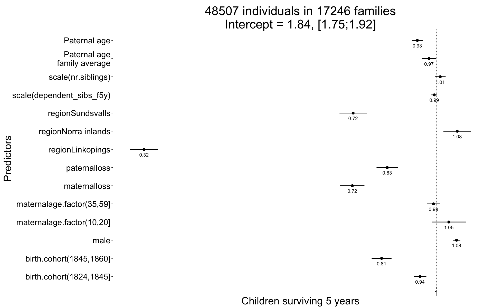
make_newdata(data.frame(paternalage.diff = c(0,1)), Children_surviving_5y@frame) -> newd
prediction = predict(Children_surviving_5y, type = "response", newdata = newd, re.form = NA )
prediction[2] - prediction[1]## 2
## -0.03848sessionInfo()## R version 3.2.3 (2015-12-10)
## Platform: x86_64-apple-darwin13.4.0 (64-bit)
## Running under: OS X 10.10.5 (Yosemite)
##
## locale:
## [1] en_US.UTF-8/en_US.UTF-8/en_US.UTF-8/C/en_US.UTF-8/en_US.UTF-8
##
## attached base packages:
## [1] stats graphics grDevices utils datasets methods base
##
## other attached packages:
## [1] mgcv_1.8-10 nlme_3.1-123 lubridate_1.5.0 Rcpp_0.12.3
## [5] QuantPsyc_1.5 MASS_7.3-45 boot_1.3-17 lme4_1.1-10
## [9] Matrix_1.2-3 stringi_1.0-1 dplyr_0.4.3 pander_0.6.0
## [13] knitr_1.12 rmarkdown_0.9.2 plyr_1.8.3 ggplot2_2.0.0
## [17] formr_0.2.9 data.table_1.9.6 stringr_1.0.0 devtools_1.9.1
##
## loaded via a namespace (and not attached):
## [1] formatR_1.2.1 nloptr_1.0.4 tools_3.2.3
## [4] digest_0.6.9 memoise_0.2.1 evaluate_0.8
## [7] gtable_0.1.2 lattice_0.20-33 DBI_0.3.1
## [10] parallel_3.2.3 SparseM_1.7 MatrixModels_0.4-1
## [13] nnet_7.3-11 grid_3.2.3 R6_2.1.2
## [16] minqa_1.2.4 car_2.1-1 magrittr_1.5
## [19] codetools_0.2-14 scales_0.3.0 htmltools_0.3
## [22] splines_3.2.3 rsconnect_0.4.1.4 pbkrtest_0.4-5
## [25] assertthat_0.1 colorspace_1.2-6 labeling_0.3
## [28] quantreg_5.19 lazyeval_0.1.10 munsell_0.4.2
## [31] chron_2.3-47date()## [1] "Tue Feb 2 19:07:34 2016"